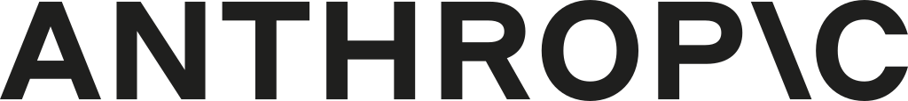

Claude Cowork は会話を本当の成果に変える。

Claude Cowork は行動優先の AI オフィスエージェントです。安全なローカルワークスペース内で 計画・実行・納品まで行い、依頼から成果物まで引き継ぎなしで進められます。実行前にすべての手順を確認。
専用のコントロール画面で Claude Cowork の計画・実行・納品を可視化し、 いつでも状況を把握できます。
ライブ・ミッションコントロール
実務向けに設計
Claude Cowork は返答するだけではありません。調整・編集・出力まで、 チームが使う形式でプロ品質のドキュメントを作成します。
ローカルファイルアクセス
アップロード不要。許可したフォルダを Claude が読み書きします。
サブエージェント協調
複雑な目標を並列タスクに分解し、より速く成果を出します。
プロ品質の出力
Excel、PowerPoint、Word をネイティブ対応。
長時間タスク
コンテキスト制限なくバックグラウンドで実行。
仕組み
Claude Cowork は、AI の自律性を活用するシンプルな 4 ステップのプロセスで知識作業を簡素化します。
フォルダアクセス権を付与
Claude Desktop を開き、Cowork インターフェースに移動します。Claude Cowork に操作させたい特定のフォルダを選択します。エージェントは明示的に付与したフォルダ内のファイルにのみアクセスでき、データの完全な制御を確保します。このフォルダは、Claude Cowork が既存ファイルを読み取り、新しいファイルを作成するワークスペースになります。
タスクを説明
自然言語で Claude Cowork に必要なことを伝えます。技術的な専門知識は不要で、単に望む結果を説明するだけです。例：「これらの領収書スクリーンショットから経費報告書を作成する」「ダウンロードフォルダをファイルタイプ別に整理する」「会議メモから要約レポートを作成する」。Claude Cowork は文脈と意図を理解します。
自律実行を確認
Claude Cowork はリクエストを分析し、実行計画を作成して、自律的に作業を開始します。インターフェースには、エージェントがファイルを読み取り、情報を処理し、出力を作成する際のリアルタイムの進捗更新が表示されます。サブエージェントは有益な場合に並列タスクを処理し、品質を維持しながら速度を最適化します。細かい管理なしで情報を把握できます。
確認と改善
完了したら、ワークスペースフォルダで直接結果を確認します。Claude Cowork は要求に応じて新しいファイルを作成し、既存のファイルを更新し、構造を再編成します。調整が必要ですか？自然言語でフィードバックを提供すると、Claude Cowork が出力を改善します。エージェントはあなたの好みから学習して、今後のタスク実行を改善します。
安全性とコントロール
Cowork は機密ファイルを守りながら、すべての手順を可視化します。
VM 分離に基づく設計
すべての操作は専用の仮想マシンで実行され、システムを保護し、 AI 自動化と主要環境の境界を明確にします。
リアルタイム監視
いつでも確認・一時停止・介入できます。
権限の範囲
タスクに必要なフォルダだけを許可します。
信頼の指標
- ユーザーの明示的許可によるローカルファースト実行。
- 自動化前に人が読める計画を提示。
- すべての操作に明確な監査履歴。
日常のユースケース
スプレッドシートから調査ブリーフまで、Cowork は多段のオフィス作業を 手作業なしで処理します。
財務分析
CSV を集計し、洗練されたレポートパッケージを提供。
市場調査
情報源を収集し、結果を統合してブリーフを作成。
ドキュメント整理
数千のファイルをリネーム・分類・要約。
FAQ
コードは必要ですか？
不要です。自然言語で結果を伝えるだけです。Cowork が手順を計画し、 安全な VM で実行して、完成ファイルをローカルフォルダに配置します。
ファイルはアップロードされますか？
いいえ。Cowork は許可したフォルダだけにアクセスし、隔離 VM 内で操作します。 各手順を確認でき、アクセス権も管理できます。
どんな出力に対応していますか？
チームが使うネイティブなプロ向けファイルに対応します。数式入り Excel、 PowerPoint デッキ、Word ドキュメントなどです。
長時間タスクに対応できますか？
はい。Cowork はセッション制限なく長いワークフローを完了でき、 多段タスクを開始から納品まで進められます。
ライブミッションコントロールはどのように機能しますか？
専用のコントロール画面で Cowork が計画、実行、納品する方法を表示します。 実行前に各ステップを確認でき、リアルタイムで操作を監視し、いつでも一時停止 または介入できます。Claude は目標を並列サブタスクに分割し、承認を得て隔離 VM 内で実行し、完成ファイルをローカルフォルダに納品します。
サブエージェント連携とは何ですか？
複雑な目標は自動的に並列サブタスクに分割され、同時に実行されて結果を高速化します。 すべてを順次処理するのではなく、Cowork は同じプロジェクトの異なる部分で作業する 複数のエージェントを調整します。
VM 隔離のセキュリティはどの程度ですか？
すべてのアクションは専用の仮想マシン内で実行され、システムを保護し、AI 自動化と コア環境の間に明確な境界を確保します。リアルタイムで監視でき、各タスクに必要な フォルダのみを許可し、すべてのアクションの監査証跡で完全な制御を維持できます。
実用的な使用例はありますか？
Cowork は、財務分析（CSV をまとめて洗練されたレポートに）、市場調査（ソースを 収集してブリーフをフォーマット）、ドキュメント整理（数千のファイルをリネーム、 分類、要約）などの多段階のオフィス作業を処理します。複数のファイルとフォーマット にわたる調整を必要とする実際のオフィス作業向けに設計されています。
実行前に計画を確認できますか？
はい。Claude は人間が読める段階的なアプローチを作成し、実行前に確認します。 自動化が実行される前に何が起こるかを常に把握でき、完全な可視性と制御を提供します。
必要なシステム要件は何ですか？
Claude Desktop がインストールされた macOS とアクティブな Claude Max サブスクリプション が必要です。作業は隔離 VM のローカル環境で行われるため、ファイルがマシンを離れる ことはありません。